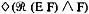

by Abraham Kandel
CRC Press, CRC Press LLC
ISBN: 084934297x Pub Date: 11/01/91
|
|
Fuzzy Expert Systems
by Abraham Kandel CRC Press, CRC Press LLC ISBN: 084934297x Pub Date: 11/01/91 |
| Previous | Table of Contents | Next |
Lee9 proposed a deduction method in fuzzy logic based on mechanical theorem proving; it is a generalization of the resolution principle. This approach has been pursued by several authors, especially Mukaidono et al.10
The resolution rules we present here are not in the framework of fuzzy logic, but in possibilistic logic. The latter, closer to classical logic than fuzzy logic, enables us to represent knowledge whose truth or falsity is uncertain, but whose content is not vague. The classical rule for propositional clauses is generalized by:
in case of lower bounds on necessity measures4 and the particularization rule by:
and, more generally, for any substitution σ, and any clause C:
Besides the following rule:5
where
holds when one of the lower bounds qualifies a possibility measure, as well as the counterpart of Equation 2:
An uncertain clause will be a first-order logic clause C to which a valuation is attached; it is a lower bound of its necessity or possibility measure. Thus, in the following we shall write (C (N ∝)) (respectively, (C Π ∝))) as soon as the inequality N(C) ≥ ∝ (respectively, Π(C) ≥ ∝) is known. Since N(p) > 0 implies Π(p) = 1, it is sufficient to consider clauses which are weighted either in terms of necessity or in terms of possibility.
We may notice the analogy of Equations 1 and 4 with the modal resolution rules (see Farinãs del- Cerro:7
and
where (E,F) is the resolvant of E and F. However, whereas E and F in Equations 6 and 7 may contain modal operators, possibilistic resolution is not allowed to handle knowledge such as N[Π(p) ≥ ∝] ≥ β yet (such an expressionted, but its semantics remain partially unclear for the moment). See Dubois, Prade, and Testemale6 for a preliminary discussion of the links between possibilistic logic and modal logic. A stronger form of Equation 7 is valid where  is derived; analogously, we can infer in Equation 4 the stronger conclusion .
The refutation method is generalized to possibilistic logic (Dubois, Prade.4,5 Indeed, if we are interested in proving that p is true, necessarily or possibly to some degree, we add to the knowledge base the assumption:
i.e., that p is false (with total certainty). Let be the new knowledge base. Then it is proved that any valuation ∝ attached to the empty clause produced by the extended resolution from  is a lower bound of the necessity (respectively, possibility) measure of the conclusion p, if its form is (N ∝) (respectively, (Π ∝)). It entails the existence of “optimal refutations,” i.e., derivations of an empty clause with a maximal valuation, the valuations being ordered by:
is a lower bound of the necessity (respectively, possibility) measure of the conclusion p, if its form is (N ∝) (respectively, (Π ∝)). It entails the existence of “optimal refutations,” i.e., derivations of an empty clause with a maximal valuation, the valuations being ordered by:
| (N ∝) ≤ (N β) if and only if ∝ ≤ β |
| (Π ∝) ≤ (Π β) if and only if ∝ ≤ β |
| (Π ∝) ≤ (N β) for any (∝,β) ∈ [0,1] × [0,1] |
Let be the following knowledge base:
| C1 | If Bob attends a meeting, then Mary does not. |
| C2 | Bob comes to the meeting tomorrow. |
| C3 | If Betty attends a meeting, then it is likely that the meeting will not be quiet. |
| C4 | It is highly possible (but not certain at all) that Betty comes to the meeting tomorrow. |
| C5 | If Albert comes tomorrow and Mary does not, then it is almost certain that the meeting will not be quiet. |
| C6 | It is likely that Mary or John will come tomorrow. |
| C7 | If John comes tomorrow, it is rather likely that Albert will come. |
| C8 | If John does not come tomorrow, it is almost certain that the meeting will be quiet. |
This can be represented by the following weighted clauses:
| C1 | (N 1) | |
| C2 | Bob(m) | (N 1) |
| C3 | (N 0.7) | |
| C4 | Betty (m) | (Π 0.8) |
| C5 | (N 0.8) | |
| C6 | (N 0.7) | |
| C7 | (N 0.6) | |
| C8 | (N 0.8) |
If we want to try to prove that the meeting tomorrow will not be quiet, we add the clause CO: quiet(m) (N 1). Then it can be checked that there exist two possible refutations:
The second refutation is the optimal one. We proved that , i.e., it is rather likely that the meeting tomorrow will not be quiet.
In order to find an optimal refutation from a set a weighted clauses , we have to define resolution strategies like in classical logic. A resolution strategy for weighted clauses will be said to be directly complete if and only if its application to a set of clauses gives an optimal refutation of (if it exists), in a finite number of applications of the resolution principle. Directly complete linear resolution strategies have been defined by adapting the ordered search algorithm A*, as follows. To each clause produced by the linear strategy we associate a state S, and for every state S we compute the functions g(S) and h(S), where g(S) is the cost of the path from the initial state to S and h(S) is the evaluation of the cost of the optimal path from S to a goal state. The involved costs are pairs of the form (N ∝) or (Π ∝), being ordered as stated in Section III. Then we compute:

and each time we expand the nondeveloped state maximizing f. If the heuristic function h verifies ∀S, , where is the real optimal cost from S to a goal state, then the strategy is directly complete. See Dubois, Lang, and Prade2 for the case of (N ∝)-valued clauses.
| Previous | Table of Contents | Next |
){kind=link}